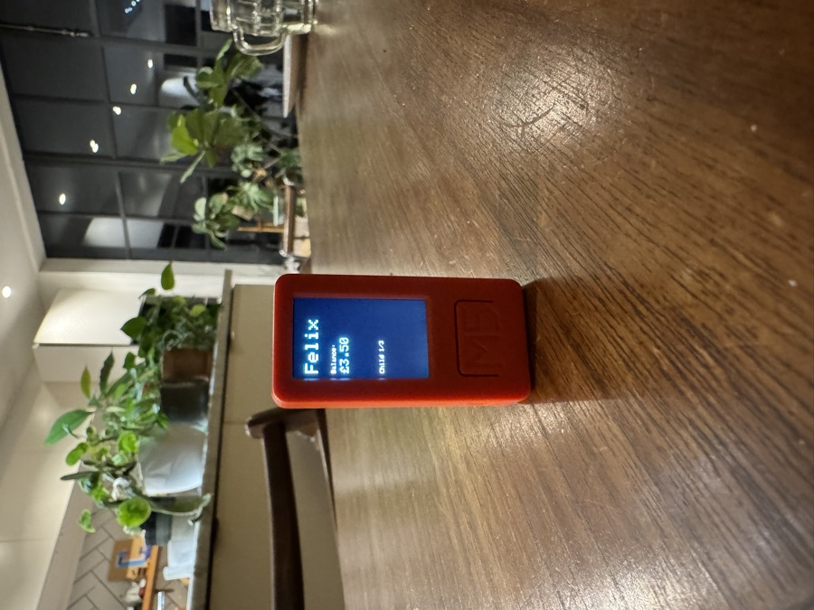
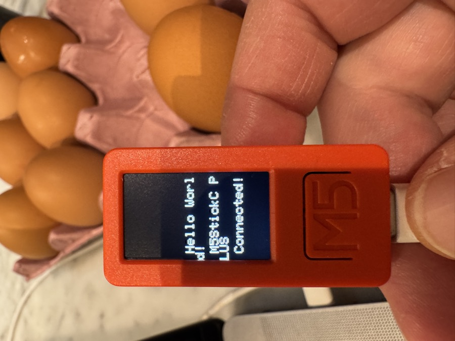
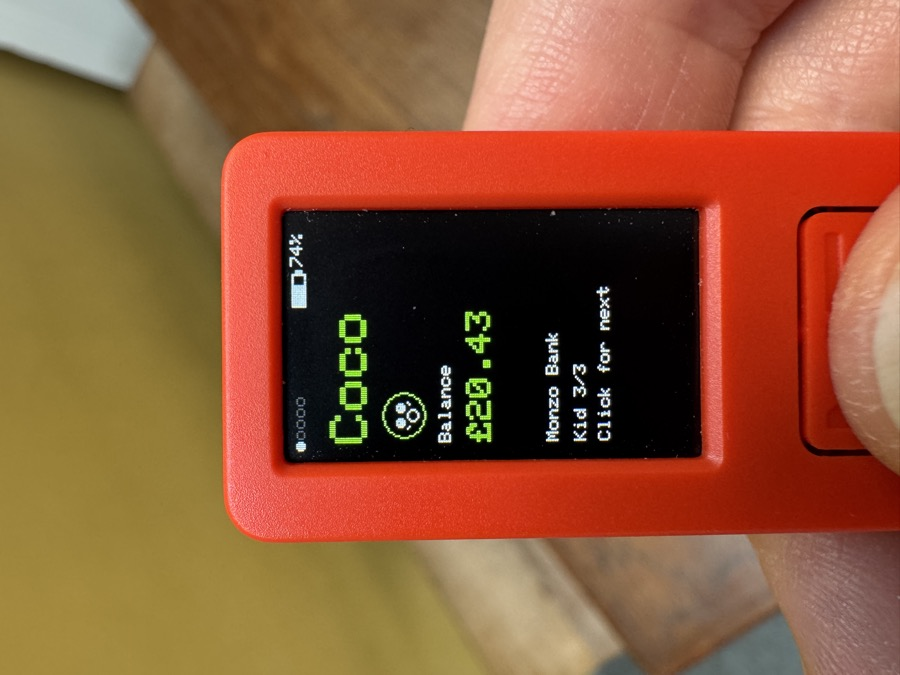

I just spent a couple of hours hooking an M5Stick device directly into the Monzo Bank API to build a live, physical display of my kids' bank balances.
No app. No dashboards. No login screens. Just a small object on the kitchen table that shows how their money is doing in real time.
It started as a hardware curiosity and turned into something more interesting: what happens when financial data becomes ambient and tangible instead of hidden behind adult interfaces?
There's something fundamentally different about information that exists in your peripheral vision versus information you have to actively seek out. The balance isn't locked away in an app that requires authentication and navigation. It's just there, on the table, updating quietly.
For kids especially, this changes the relationship with money. It's not an abstract number they occasionally glimpse when a parent logs in. It's a physical presence in their environment, something they can glance at while eating breakfast or doing homework.
The M5Stick is a small ESP32-based device with a built-in screen, battery, and WiFi. Perfect for this kind of ambient display. The Monzo API is surprisingly accessible, once you've got OAuth sorted, pulling account balances is straightforward.
The whole thing took a couple of hours to get working. Most of that time was spent on the OAuth flow rather than the actual display logic. Once the authentication was in place, the rest was just formatting numbers and deciding on refresh intervals.
The most interesting part of this project isn't the technical implementation. It's what it says about how we design access to information. Financial apps are built around security, authentication, and comprehensive feature sets. All necessary, but they also create friction.
What happens when financial data becomes ambient and tangible instead of hidden behind adult interfaces?
This tiny device does one thing: show a number. No transaction history, no spending categories, no budgeting tools. Just the balance, updated in real time. And that constraint is what makes it useful for its specific purpose.
This was inspired by Shay Moradi's recent LLM experiments with M5Stack devices. Seeing what he was building with these small, programmable screens got me thinking about other data sources that might benefit from physical, ambient representation.
There's a rich design space here. Somewhere between full-featured apps and the complete absence of information. Small, dedicated displays that surface specific data without the overhead of general-purpose interfaces.